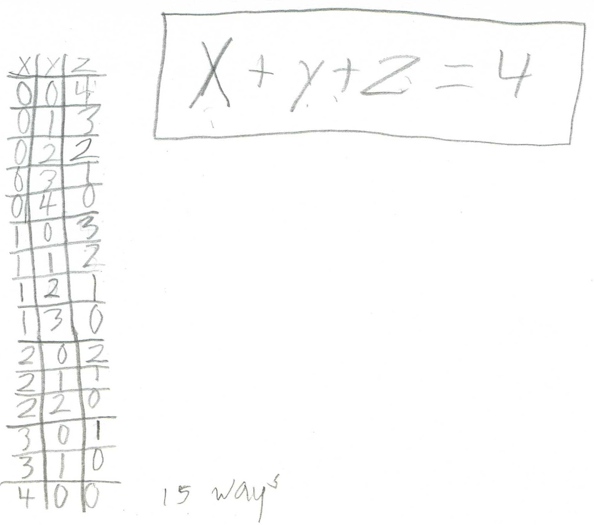
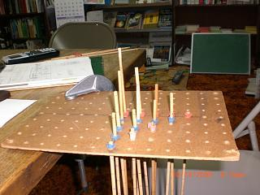
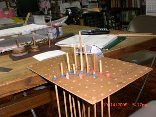
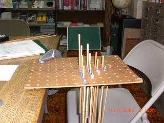
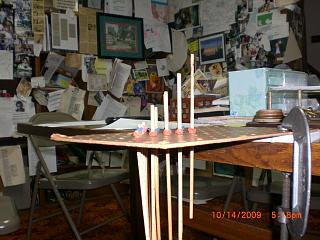
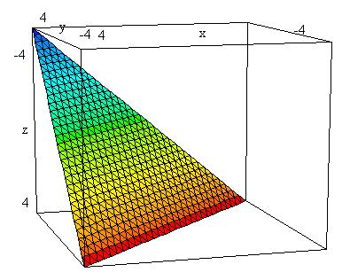

Van, a 4th grader, graphs in 3D
Van started making up equations, and one was in 3 variables. When Don saw this he decided to get Van graphing in 3D. He had done some graphing of linear functions in 2D.
[Theodore Gray, co-founder of Wolfram Research, Inc makers of Mathematica, Popular Science columnist, element collector, creator and builder of The Wooden Periodic Table Table, and author of the book The Elements (2009), when he worked with Donas a 5th grader many years ago, he invented a 3D graphing board- a thin plywood board with holes, with marked wooden dowel rods, and used rubber bands to mark the points].
Don took out the board and rods so Van could use them. Don suggested he graph x+y+z=4. After figuring out how the board worked, where the x, y and z-axes where, and how to plot a point, he proceeded to make a table of values, then plot the graph. Van decided though, that instead of having the points be the rubber bands, he decided to let the top of the rod be the points plotted, which was much better because it was easier to see what the resulting graph looked like -in this case, part of a plane. He thought he would put a piece of cloth over the rods to show the plane better. His graph is shown from various angles below.

 
 
Don also showed Van the same graph as done in DPGraph (David Parker's very fine 3D graphing software, and very inexpensive):

Fine work, Van!